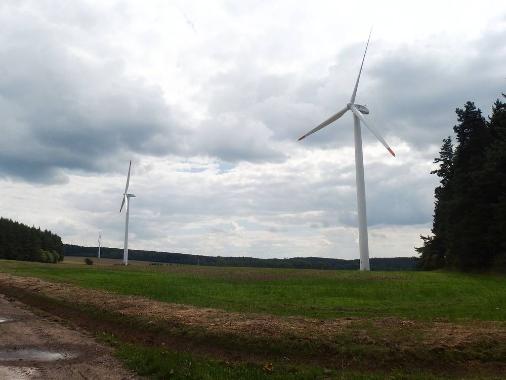

체코 풍력 마을 3곳 "소음·건강 걱정 현실 안 돼"…수익은 투자자와 맺은 조건 따라 갈려, 쓰레기 수수료 없앤 곳·한 번 받고 끝난 곳

그루나 2006년부터 4기·베주니체 2009년부터 2기·아넨스카 스투단카 6기, 주민 민원 없어…경관 반대는 남아, 세 곳 모두 "착공 전 주민 소통과 투자자 선택이 가장 중요"
체코에서 풍력발전기와 오랫동안 함께 살아온 마을 세 곳이 건설 전 주민들이 걱정했던 소음·건강·집값·삶의 질 문제가 실제로는 나타나지 않았다고 답했다. 2006년부터 4기가 돌아가는 그루나, 2009년부터 2기가 있는 베주니체, 20년 가까이 6기가 서 있는 아넨스카 스투단카는 체코 에너지 매체의 질문에 이렇게 밝혔고, 그루나와 아넨스카 스투단카는 접수된 민원도 없었다고 했다. 다만 경제적 혜택은 마을이 투자자와 맺은 조건에 따라 크게 달랐다. 그루나는 풍력 수입으로 마을 쓰레기 수수료를 없앴고 이제 주민이 공동체 에너지에 참여하는 방안을 검토하고 있으며, 베주니체는 발전사와 맺은 협력 협약으로 해마다 지원금을 받는다. 반면 아넨스카 스투단카는 처음 단지를 지을 때 발전기 1기당 약 15만 코루나를 한 번 받은 것이 전부여서 지금은 장기 혜택이 없고, 경관 때문에 여전히 반대하는 주민도 있다. 세 마을은 착공 전 주민에게 위험까지 솔직하게 알리고 의견을 묻는 소통과, 수십 년 동반자가 될 투자자를 고르는 일이 가장 중요하다고 입을 모았다.
시민에너지 관점
체코 세 마을의 경험은 풍력의 진짜 쟁점이 소음보다 수익을 누가 갖느냐에 있음을 보여준다. 같은 풍력발전기를 두고도 한 마을은 쓰레기 수수료를 없앴고, 다른 마을은 한 번 받은 돈으로 끝났다. 처음 계약에서 장기 수익 몫을 정하지 않으면 주민은 20년 동안 경관만 내주는 셈이 된다. 우리 지자체도 풍력 허가 단계에서 주민 지분과 해마다 받는 수익 몫을 계약서에 못 박고, 주민이 직접 출자하는 협동조합의 길을 처음부터 열어 둬야 한다.
출처: oEnergetice.cz 2026-11-09 Marek Kršák 원문 보기
チェコの風力の村3カ所「騒音・健康の懸念は現実にならず」…収益は投資家と結んだ条件次第、ごみ手数料を廃止した村と一度きりで終わった村
グルナは2006年から4基・ヴェジュニツェは2009年から2基・アネンスカー・ストゥダーンカは6基、住民の苦情なし…景観への反対は残り、3村とも「着工前の住民との対話と投資家選びが最も重要」
チェコで風力発電機と長く共存してきた3つの村が、建設前に住民が心配していた騒音・健康・住宅価格・生活の質の問題は実際には現れなかったと答えた。2006年から4基が回るグルナ、2009年から2基があるヴェジュニツェ、20年近く6基が立つアネンスカー・ストゥダーンカは、チェコのエネルギー専門メディアの質問にこう答え、グルナとアネンスカー・ストゥダーンカは寄せられた苦情もなかったとした。ただし経済的な恩恵は、村が投資家と結んだ条件によって大きく異なった。グルナは風力収入で村のごみ手数料を廃止し、今は住民がコミュニティエネルギーに参加する方法を検討しており、ヴェジュニツェは発電会社と結んだ協力協定で毎年支援金を受け取っている。一方、アネンスカー・ストゥダーンカは最初の発電所建設時に発電機1基当たり約15万コルナを一度受け取っただけで、今は長期的な恩恵がなく、景観を理由に今も反対する住民もいる。3つの村は、着工前に住民へリスクまで率直に伝えて意見を聞く対話と、数十年のパートナーとなる投資家を選ぶことが最も重要だと口をそろえた。
市民エネルギーの視点
チェコの3つの村の経験は、風力の本当の争点が騒音よりも収益を誰が持つかにあることを示している。同じ風力発電機でも、ある村はごみ手数料をなくし、別の村は一度受け取ったお金で終わった。最初の契約で長期の収益の取り分を決めなければ、住民は20年間景観を差し出すだけになる。韓国の自治体も、風力の許可段階で住民の持ち分と毎年受け取る収益の取り分を契約書に明記し、住民が直接出資する協同組合の道を最初から開いておくべきだ。
出典: oEnergetice.cz 2026-11-09 Marek Kršák 原文を読む
捷克三个风电村庄："噪音和健康担忧并未成真"…收益取决于与投资者谈定的条件，有的取消垃圾费，有的只拿到一次性补偿
格鲁纳自2006年起4台、韦日尼采自2009年起2台、阿嫩斯卡·斯图丹卡6台，均无居民投诉…景观反对声仍在，三村一致认为"开工前与居民沟通、选择投资者最重要"
捷克三个与风力发电机长期共处的村庄表示，建设前居民担心的噪音、健康、房价和生活质量问题实际上并未出现。自2006年起运行4台风机的格鲁纳、自2009年起有2台风机的韦日尼采，以及6台风机矗立近20年的阿嫩斯卡·斯图丹卡，在回答捷克能源媒体提问时作出上述表示，格鲁纳和阿嫩斯卡·斯图丹卡还称没有收到过投诉。不过，经济收益因村庄与投资者谈定的条件而差异很大。格鲁纳用风电收入取消了村里的垃圾费，目前正研究让居民参与社区能源的办法；韦日尼采则依据与发电企业签订的合作协议每年获得资助。相比之下，阿嫩斯卡·斯图丹卡在最初建设时每台风机只拿到约15万克朗的一次性补偿，如今没有长期收益，仍有居民因景观问题反对风电。三个村庄一致表示，开工前向居民坦诚说明包括风险在内的情况并听取意见，以及挑选将成为几十年合作伙伴的投资者，是最重要的。
市民能源视角
捷克三个村庄的经验表明，风电真正的争点与其说是噪音，不如说是收益归谁。面对同样的风机，一个村取消了垃圾费，另一个村拿到一次性补偿就结束了。如果在最初合同中不确定长期收益份额，居民等于在20年里只是让出了风景。韩国地方政府也应在风电许可阶段，把居民股份和每年的收益份额写进合同，并从一开始就为居民直接出资的合作社开路。
来源: oEnergetice.cz 2026-11-09 Marek Kršák 查看原文
Three Czech Wind Villages Say Noise and Health Fears Never Materialised, but Benefits Depend on Terms Struck with Investors, from Abolished Waste Fees to a One-Off Payment
Gruna has had four turbines since 2006, Věžnice two since 2009 and Anenská Studánka six for nearly two decades, with no resident complaints; landscape objections remain, and all three say early communication and choice of investor matter most
Three Czech villages that have lived with wind turbines for years say the problems residents feared before construction, including noise, health effects, property prices and quality of life, did not materialise. Gruna, where four turbines have run since 2006, Věžnice, with two since 2009, and Anenská Studánka, where six have stood for nearly two decades, gave these answers to a Czech energy news site, and Gruna and Anenská Studánka said they had received no complaints. Economic benefits, however, varied widely depending on the terms each village agreed with investors. Gruna used its wind revenue to abolish the municipal waste fee and is now considering ways for residents to join community energy, and Věžnice receives annual funding under a cooperation agreement with the operator. Anenská Studánka, by contrast, received only a one-off payment of about 150,000 crowns per turbine when the original farm was built and has no long-term benefit today, and some residents still oppose the turbines because of the landscape. All three villages agreed that honest communication with residents before construction, including about risks, and choosing an investor who will be a partner for decades matter most.
Citizen Energy View
The three Czech villages show that the real issue with wind power is less about noise than about who keeps the revenue. With the same turbines, one village abolished its waste fee while another was left with a single payment. If the first contract does not set a long-term share of revenue, residents end up giving away their landscape for 20 years. Korean local governments should write resident equity and an annual revenue share into contracts at the wind permitting stage, and open the way from the start for cooperatives in which residents invest directly.
Source: oEnergetice.cz 2026-11-09 Marek Kršák Read the original